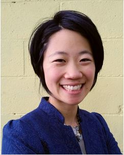
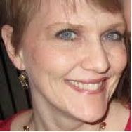
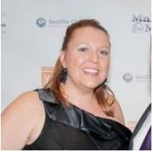

Team
This event would not be possible without the support of our volunteers, partners and sponsors.
Anna Choi
Anna Choi, Founder, Event Producer
Anna Sun Choi, President of JoySprout Productions, is fiercely committed to producing creative, remarkable event experiences for cause-driven organizations that support social change. She brings a unique global perspective living abroad in Italy and South Korea, and visiting Africa, Costa Rica and Qatar. Formally trained as an artist, she wasn’t clear how to make tons of money as an artist and went the opposite extreme forgoing all creativity by becoming a Financial Planner. Her three year plan to make six figures didn’t pan out in an industry that doesn’t reward creativity.
After selling her 5 year financial planning practice in 2010, she created JoySprout Productions who helps leaders of cause driven organizations that want to get their message out, make money and build their community.
Anna is a TEDxBellevue Organizer and a Self Expression and Leadership Program Leader, bringing over 5000+ hours of professional training and development in communication, leadership, and team management that allow for you as an organization to be heard to manifest your vision, impact social change, sustainably make money, and unleash joy along the way!
Karina Miller
Karina Miller, Co-Organizer
Karina is an experienced team leader, leadership coach, human resources professional, public speaker, trainer and group facilitator with a passion for helping people understand and see possibility in themselves and each other, and for building healthy teams and workplace cultures. She has over 20 years of entrepreneurial business experience with extensive leadership and communications training and a Bachelor’s degree in English Literature and Creative Writing from the University of Washington.
As an early employee of Impinj, Inc., she has had the privilege of helping grow the company from early-stage startup status to a recognized innovator and worldwide leader in Radio Frequency Identification. She is also the Founder and Principal of Rockstack Consulting, LLC, which provides team building, strategy, coaching, consulting, training, and human resources services to entrepreneurial teams.
Erin Loman Jeck
Erin Loman Jeck, Speaker Lead
Erin is the Founder of Create Infinite Balance, L.L.C., Speaker, Author, host of her own radio show Life's a Journey not a Destination.
Erin has been interested in helping people overcome challenges and expand their experiences for over 20 years. While completing her M. A. in Marriage and Family Therapy, Erin made huge advances in her own personal growth and since then, she has dedicated her life to helping individuals find their passion, direction, and charge to create an infinite difference in the world. She coaches executives, professionals, competitive athletes and individuals to grow and maximize their strengths, reach their potential, and achieve results. Erin leads a variety of coaching workshops where she provides tools to increase confidence, motivation, and a sense of fearlessness in achieving your personalized goals.
Erin is an expert in working with executive leadership as a professional speaker as well as working one on one to help them find new careers, balance their lives, improve their relationships, work more effectively, clarify and reach their goals, and be their maximized self.
As a speaker Erin’s passion is contagious and her stories are not only relatable but, leave you feeling exhilarated as if she took you on an adventure. Erin provides her audiences with invaluable takeaways with her simple and duplicatable system.
Jamie Wagoner
Jamie Wagener, Chef-Off Organizer
Jamie is the Founder of The Blissful Kitchen, a Food Creator, and a Health Educator with an immense passion for whole foods and holistic living. From teaching workshops to recipe development, her mission in life is to inspire others to live their happiest, healthiest life by sharing her genuine love for life with the world, along with deliciously wholesome food. She is certified in raw foods thru Regeneration Raw and was a pastry chef at Chakra 4 Vegetarian Café in Phoenix making an assortment of raw vegan pies, cakes, macaroons, cookies and other sweet temptations.
She has also immersed herself in the fields of holistic health & integrative nutrition taking several courses in physical science, naturopathy, nutrition and psychology and receiving certification as a certified Holistic Health Counselor thru the Institute for Integrative Nutrition. In 2011 she launched her own business, The Blissful Kitchen, to connect her passion for creating in the kitchen with her desire to inspire people to live their best, most healthy life.
Amber Miller

Amber Miller, Production Lead
Amber has a Bachelor of Arts degree in American Cultural Studies from Western Washington University and an Associate of Arts in Intercultural/Multicultural and Diversity Studies from Green River Community College. Her experience includes producing campus diversity events, working with diverse student populations, and a quarter abroad in the Dominican Republic. She currently works in customer service for TrueBlue, Inc, a labor staffing company. She also has extensive training in communication and team leadership and is a highly effective coach.
Partners
Volunteer
If you would like to volunteer the day of with the Creativity Symposium, please contact Anna at annasunchoi@gmail.com with your contact info and why you’d like to volunteer.